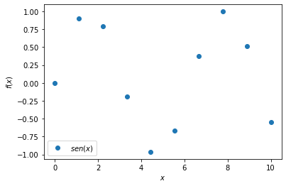
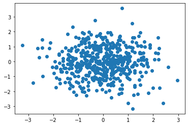
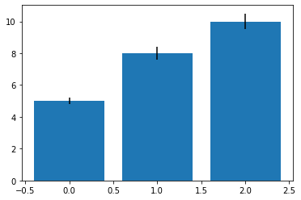
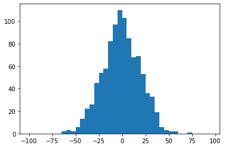
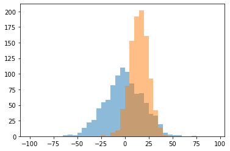
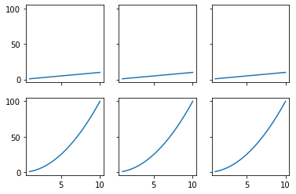
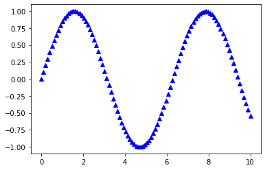
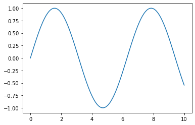

Matplotlib¶
import numpy as np
import matplotlib.pyplot as plt
x = np.linspace(0,10,100)
plt.plot(x, np.sin(x))
plt.show()

x = np.linspace(0, 10, 10)
plt.plot(x, np.sin(x), label=(r'$sen(x)$'), linestyle='', marker='o')
plt.ylabel(r'$f(x)$')
plt.xlabel('$x$')
plt.legend(loc='best')
plt.show()

rng = np.random.RandomState(123)
x = rng.normal(size=500)
y = rng.normal(size=500)
plt.scatter(x, y)
plt.show()

means = [5, 8, 10]
stddevs = [0.2, 0.4, 0.5]
bar_labels = ['bar 1', 'bar 2', 'bar 3']
# plot bars
x_pos = list(range(len(bar_labels)))
plt.bar(x_pos, means, yerr=stddevs)
plt.show()

rng = np.random.RandomState(123)
x = rng.normal(0, 20, 1000)
# fixed bin size
bins = np.arange(-100, 100, 5) # fixed bin size
plt.hist(x, bins=bins)
plt.show()

rng = np.random.RandomState(123)
x1 = rng.normal(0, 20, 1000)
x2 = rng.normal(15, 10, 1000)
# fixed bin size
bins = np.arange(-100, 100, 5) # fixed bin size
plt.hist(x1, bins=bins, alpha=0.5)
plt.hist(x2, bins=bins, alpha=0.5)
plt.show()

x = np.linspace(1,10)
fig, ax = plt.subplots(nrows=2, ncols=3,
sharex=True, sharey=True)
conta = 1
for row in ax:
for col in row:
col.plot(x, x**(conta))
conta += 1
plt.show()

x = np.linspace(0, 10, 100)
plt.plot(x, np.sin(x),
color='blue',
marker='^',
linestyle='')
plt.show()

x = np.linspace(0, 10, 100)
plt.plot(x, np.sin(x))
plt.savefig('mi_figura.png', dpi=300)
plt.savefig('mi_figura.pdf')
plt.show()
